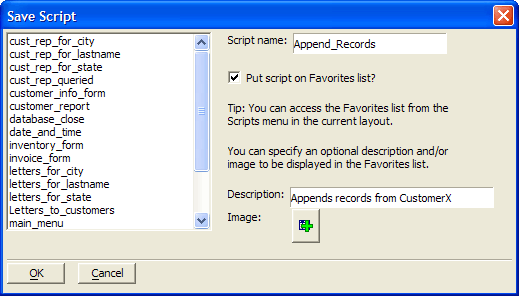

Using the Xbasic Window
By default, the Xbasic window shows the Raw Xbasic code for the operation. Raw Xbasic means the code shown is the exact code for the currently defined operation. It's a direct translation of what's in your Operation Card.
The Raw Xbasic view is great for seeing what's going on behind-the-scenes when you are creating an Operation, but Raw Xbasic has little meaning outside the Operation Card. That's where the Processed Xbasic view comes in.
Using the radio buttons, you can switch the view between Raw Xbasic, Processed Xbasic, and Processed without Confirmation dialogs.
Processed Xbasic
When you switch the view to Processed Xbasic, the code shown changes to the actual complete script that will be processed by Alpha Five. The Processed code contains the necessary table information to run the script.
Processed without Confirmation Dialogs
Switching to this code view is the same as the Processed view, but without any confirmation dialog boxes with the script is executed. This code executes the script silently without any visual confirmations.
Copying and Saving Xbasic Code
When you view the Xbasic code for your operation, you can easily copy some or all of the code to the clipboard, or save either of the Processed versions as an independent script.
To copy Xbasic code to the clipboard, highlight the script portion you want and click Copy to Clipboard.
To copy the entire script, just click the button without highlighting.
To save Processed Xbasic code as a Script:
Switch to one of the Processed Xbasic views and click Save as Script.
The Save Script dialog box appears. Enter a name for your script and click OK.

Save Script Dialog Box
Your script now appears on the Code tab of the Control Panel.